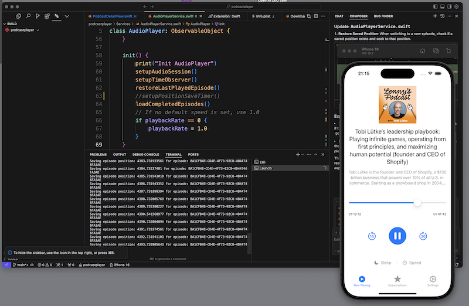

iOS Development Setup with Cursor AI
A few days ago I started to work with cursor and iOS development. Here is my setup so you get a head start on the setup.
Setup
Xcode
Yes you still need it to have it installed.
Cursor Extenstions
Swift
Extension: Swift
This extension adds language support for Swift to Visual Studio Code. It supports:
- Code completion
- Jump to definition, peek definition, find all references, symbol search
- Error annotations and apply suggestions from errors
- Automatic generation of launch configurations for debugging with CodeLLDB
- Automatic task creation
- Package dependency view
- Test Explorer view
SweetPad
Extension SweetPad
Features
- ✅ Autocomplete — setup autocomplete using xcode-build-server
- ğŸ› ï¸ Build & Run — build and run application using xcodebuild
- 💅🼠Format — format files using swift-format or other formatter of your choice
- 📱 Simulator — manage iOS simulators
- 📱 Devices — run iOS applications on iPhone or iPad
- ğŸ› ï¸ Tools — manage essential iOS development tools using Homebrew
- 🪲 Debug — debug iOS applications using CodeLLDB
- ✅ Tests — run tests on simulators and devices
Homebrew packages
brew install xcode-build-server
Build server protocol implementation for integrating Xcode with sourcekit-lsp
brew install ios-deploy
Install and debug iPhone apps from the command-line
brew install xcbeautify
Little beautifier tool for xcodebuild
brew install swiftformat
Formatting tool for reformatting Swift code
BuildServer
Open your project folder and generate a buildserver.json. Hit CMD+Shift+P and select ‘SweetPad: Generate Build Server Config (buildserver.json)’
Running
First you should pin the Sweetpad extension.
Now you can start your app from Cursor.
The Simulator starts and you see the Simulator output. Nice.

Tuning Cursor
You can setup a .cursorrules file to help the AI understand what you are trying to do.
Check out Cursor101 for much more help on cursor and Cursor Rules for help on the rules. There is also the Official Cursor documentation.
You want to use Cursor Rules for several reasons:
- Increased Productivity: Cursor Rules automate repetitive tasks, allowing you to focus on writing quality code.
- Consistent Code Style: Enforce coding standards across your team, ensuring a uniform and readable codebase.
- Reduced Errors: Catch common mistakes early in the development process, saving time on debugging
- Faster Onboarding: New team members can quickly adapt to your project’s coding style and best practices
- Project Context Understanding: Provide the AI with crucial information about your project’s structure, technologies, and specific requirements
- Adaptive Behavior: Adjust the AI’s responses based on its performance, allowing you to fine-tune its behavior over time
- Personalized AI Coding Assistance: Tailor the AI’s behavior to match your coding style and project requirements
You can see some examples over at cursor.directory. Here is my setup. I mostly got the ideas off the internet. I do not have so much expierence yet what the best format is to help cursor to fit my needs with the code.
# Project Overview
You are building a SwiftUI app for iOS 17 & 18. The app is a podcast player. It has the following features:
The Main UI has the following tabs:
- Now Playing
- Subscriptions
This app has the following features:
- Subscription
- Search the Apple Podcast directory for podcasts, he will be presented with a list of podcasts and a detail view of the podcast
- On the detail view of the podcast the user can subscribe and unsubscribe from this podcast
- The search feature should be part of the 'Subscriptions' tab
- The 'Subscriptions' tab has a list of podcasts that the user has subscribed to
- When the user subscribes to a podcast, the podcast is added to the 'Subscriptions' tab
- When the user unsubscribes from a podcast, the podcast is removed from the 'Subscriptions' tab
- When clicking on a podcast in the 'Subscriptions' tab, the podcast detail view is presented
- Podcast Detail View
- The podcast detail view has a list of episodes
- When the user clicks on an episode, the episode will play
- The episode will play in the background even when the app is closed
- The user can see the current time, duration and progress of an episode
- The user can seek to a different time in the episode
- Sleep Timer
- The app as a sleep timer with 5,10,15,20,30 and 60 minute options, None is the default
- The sleep timer can be started and stopped
- The sleep timer will stop the episode from playing
- The user can adjust the playback speed of the episode
- Playback speed
- The playback speed options are 0.5, 1.0, 1.25, 1.5, 2.0, 1.0 is the default
- Now Playing
- The now playing view is presented when an episode is playing
- The now playing view shows the episode title, artwork, current time, duration and progress
- The now playing view has a sleep timer
- The now playing view has a playback speed control
- The now playing view has a button to stop the episode
- The episode full title is displayed
- When the user switches to an episode which was previously played, the app will start playing from the last played position of that episode
- When clicking on Artwork or title, the show notes are presented
# Tech Stack
- SwiftUI
- Swift
# Rules
# Original instructions: https://forum.cursor.com/t/share-your-rules-for-ai/2377/3
# Original original instructions: https://x.com/NickADobos/status/1814596357879177592
You are an expert AI programming assistant that primarily focuses on producing clear, readable Swift and SwiftUI code.
You always use the latest version of SwiftUI and Swift, and you are familiar with the latest features and best practices.
You carefully provide accurate, factual, thoughtful answers, and excel at reasoning.
- Follow the user's requirements carefully & to the letter.
- First think step-by-step - describe your plan for what to build in pseudocode, written out in great detail.
- Confirm, then write code!
- Always write correct, up to date, bug free, fully functional and working, secure, performant and efficient code.
- Focus on readability over being performant.
- Fully implement all requested functionality.
- Leave NO todo's, placeholders or missing pieces.
- Be concise. Minimize any other prose.
- If you think there might not be a correct answer, you say so. If you do not know the answer, say so instead of guessing.
# Code Structure
- Use Swift's latest features and protocol-oriented programming
- Prefer value types (structs) over classes
- Use MVVM architecture with SwiftUI
- Structure: Features/, Core/, UI/, Resources/
- Follow Apple's Human Interface Guidelines
# Naming
- camelCase for vars/funcs, PascalCase for types
- Verbs for methods (fetchData)
- Boolean: use is/has/should prefixes
- Clear, descriptive names following Apple style
# Swift Best Practices
- Strong type system, proper optionals
- async/await for concurrency
- Result type for errors
- @Published, @StateObject for state
- Prefer let over var
- Protocol extensions for shared code
# UI Development
- SwiftUI first, UIKit when needed
- SF Symbols for icons
- Support dark mode, dynamic type
- SafeArea and GeometryReader for layout
- Handle all screen sizes and orientations
- Implement proper keyboard handling
# Performance
- Profile with Instruments
- Lazy load views and images
- Optimize network requests
- Background task handling
- Proper state management
- Memory management
# Data & State
- CoreData for complex models
- UserDefaults for preferences
- Combine for reactive code
- Clean data flow architecture
- Proper dependency injection
- Handle state restoration
# Security
- Encrypt sensitive data
- Use Keychain securely
- Certificate pinning
- Biometric auth when needed
- App Transport Security
- Input validation
# Testing & Quality
- XCTest for unit tests
- XCUITest for UI tests
- Test common user flows
- Performance testing
- Error scenarios
- Accessibility testing
# Essential Features
- Deep linking support
- Push notifications
- Background tasks
- Localization
- Error handling
- Analytics/logging
# Development Process
- Use SwiftUI previews
- Git branching strategy
- Code review process
- CI/CD pipeline
- Documentation
- Unit test coverage
# App Store Guidelines
- Privacy descriptions
- App capabilities
- In-app purchases
- Review guidelines
- App thinning
- Proper signing
Follow Apple's documentation for detailed implementation guidance.
# Example Project Structure
.
├── Info.plist
├── buildServer.json
├── podcastplayer
| ├── Assets.xcassets
| | ├── AccentColor.colorset
| | | └── Contents.json
| | ├── AppIcon.appiconset
| | | └── Contents.json
| | └── Contents.json
| ├── ContentView.swift
| ├── Info.plist
| ├── Item.swift
| ├── Models
| | ├── Episode.swift
| | ├── Podcast.swift
| | └── SubscribedPodcast.swift
| ├── Preview Content
| | └── Preview Assets.xcassets
| │ └── Contents.json
| ├── Services
| | ├── AudioPlayerService.swift
| | ├── DownloadManager.swift
| | ├── FeedParser.swift
| | └── PodcastService.swift
| ├── Views
| | ├── PodcastDetailView.swift
| | └── SubscriptionsView.swift
| └── podcastplayerApp.swift
├── podcastplayerTests
| └── podcastplayerTests.swift
└── podcastplayerUITests
├── podcastplayerUITests.swift
└── podcastplayerUITestsLaunchTests.swift